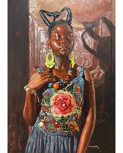
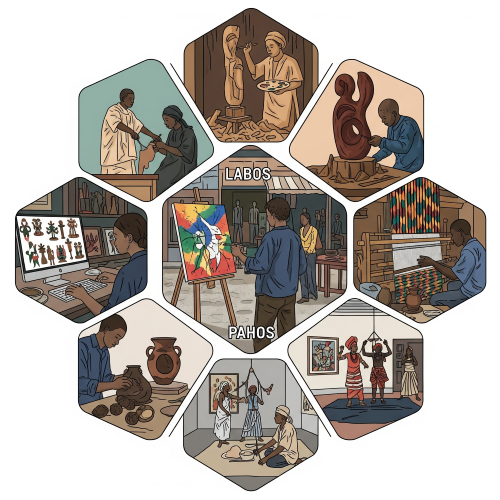

Contemporary Nigerian Art and Artists
Meaning of Contemporary Nigerian Art
Contemporary Nigerian Art is the type of art done by Nigerian artists in modern times. It shows modern life, people’s experiences, culture, and society. It also includes new styles and new ways of doing art that are different from the old or traditional art.

It can be seen in: Paintings, Drawings, Sculpture, Textile, Posters and computer designs etc . Contemporary art is the type of art we see today, in homes, offices, newspapers, galleries, and on television.
Features (Characteristics) of Contemporary Nigerian Art
- It is done by trained artists.
- It is often signed by the artist.
- It is creative and modern.
- It uses modern materials like poster colour, oil paint, watercolour, fabric, beads, etc.
- It can show personal feelings, social problems, or culture.
- It is found in schools, galleries, museums, and exhibitions.
Uses of Contemporary Art
- It is use For education.
- It is use For decoration.
- It is use For communication.
- It is use For entertainment.
- It is use For cultural promotion.
- It is use For income generation (artists make money from selling their works).
Types of Contemporary Nigerian Art
contemporary Nigerian art, which is a modern and diverse artistic expression reflecting current Nigerian life, culture, and society. It encompasses various forms like painting, sculpture, and digital design, and is a departure from older, traditional art forms.

- Painting – Using colours on paper, canvas, or cloth to make pictures.
- Sculpture – Making objects by carving wood, moulding clay, or shaping metal.
- Textile Design – Making patterns on cloth by tie and dye, batik, or printing.
- Graphics – Designing posters, book covers, adverts, and signs.
- Ceramics – Making modern pots, plates, and decorative items with clay.
- Mixed Media – Joining different materials like cloth, paper, and beads in one artwork.
- Installation and Performance Art – Art that is arranged or performed in public for people to watch and learn from.
Famous Contemporary Nigerian Artists and Their Contributions
| Artist Name |
Art Area |
Contribution |
| Aina Onabolu |
Painting |
First Nigerian to introduce modern art in schools |
| Ben Enwonwu |
Painting, Sculpture |
Famous for Queen Elizabeth II painting and Anyawu sculpture |
| Bruce Onobrakpeya |
Printmaking |
Known for new printing styles and mixed media art |
| Yusuf Grillo |
Painting |
Used blue colours and Yoruba culture in his works |
| Kolade Oshinowo |
Painting |
Paints scenes of Nigerian daily life |
| Uche Okeke |
Drawing, Painting |
Used Igbo signs and symbols in his works |
| Akinola Lasekan |
Cartoon, Illustration |
Drew in early newspapers and illustrated books |
| Demas Nwoko |
Architecture |
Designs buildings in African traditional style |
| Clara Etso Ugbodaga-Ngu |
Painting |
One of the first female painters in Nigeria |
| Ladi Kwali |
Pottery |
Famous for her beautiful pots, appeared on ₦20 note |
| Lamidi Fakeye |
Sculpture |
Known for carved wooden artworks and teaching others |
| Mrs Etsu Ngbogahga |
Textile |
Worked in promoting local fabrics and craft |
| Nike Davies-Okundaye |
Textile |
Expert in Adire and runs one of the biggest art galleries |
| El Anatsui |
Sculpture |
Makes large artworks from bottle tops and waste materials |
Importance of These Artists
- They promote Nigerian culture.
- They create jobs and inspire young people.
- They make Nigeria known in other countries.
- Their works are used in schools, museums, and festivals.
- They teach new art styles to students.
Income Generation Through Contemporary Art
Contemporary Nigerian Art helps artists and other people to make money. This is called income generation.
- Artists can earn income by Selling their paintings, sculptures, or crafts in galleries and exhibitions.
- Artists can earn income by Teaching art in schools or private lessons.
- Artists can earn income by Designing posters, adverts, and book covers for companies.
- Artists can earn income by Making decorations for events and festivals.
- Artists can earn income by Printing T-shirts, bags, and fabric with their designs.
- Artists can earn income by Selling artworks online or in local markets.
- Artists can earn income by Working as digital artists or illustrators for companies.
This shows that contemporary art is not only useful for beauty and culture but can also help people to start businesses, get jobs, and support their families.
Places to Find Contemporary Nigerian Art
- Nike Art Gallery (Lagos).
- National Gallery of Art (Abuja).
- Terra Kulture (Lagos).
- ArtX Lagos (Art fair).
- Private art studios.
- Schools and universities.
- Online platforms and exhibitions.
Materials Used in Contemporary Art
- Paints (acrylic, oil, watercolour).
- Cement, wood, plastic.
- Fabric, wool, leather.
- Wires, beads, glass.
- Recycled waste materials.
- Computers and digital tools (for graphic design).
How to Encourage Contemporary Art in Schools
- Providing art teachers and materials.
- Visiting art galleries and exhibitions.
- Including art in school competitions.
- Inviting local artists to speak.
- Letting students practise different types of art.
Difference Between Traditional and Contemporary Art
| Traditional Art |
Contemporary Art |
| Made long ago |
Made in modern times |
| For culture and religion |
For decoration, education, and business |
| Made with natural tools |
Made with modern tools |
| Not signed |
Usually signed by artist |